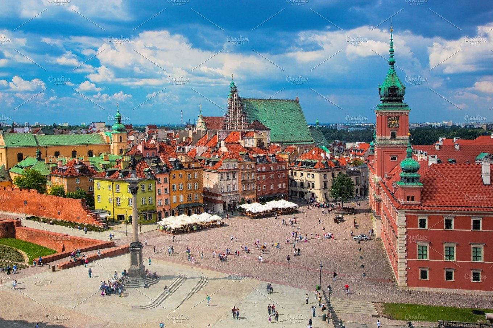
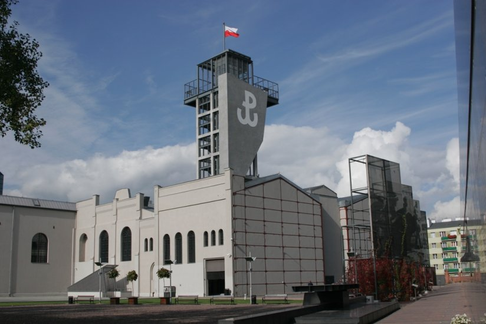
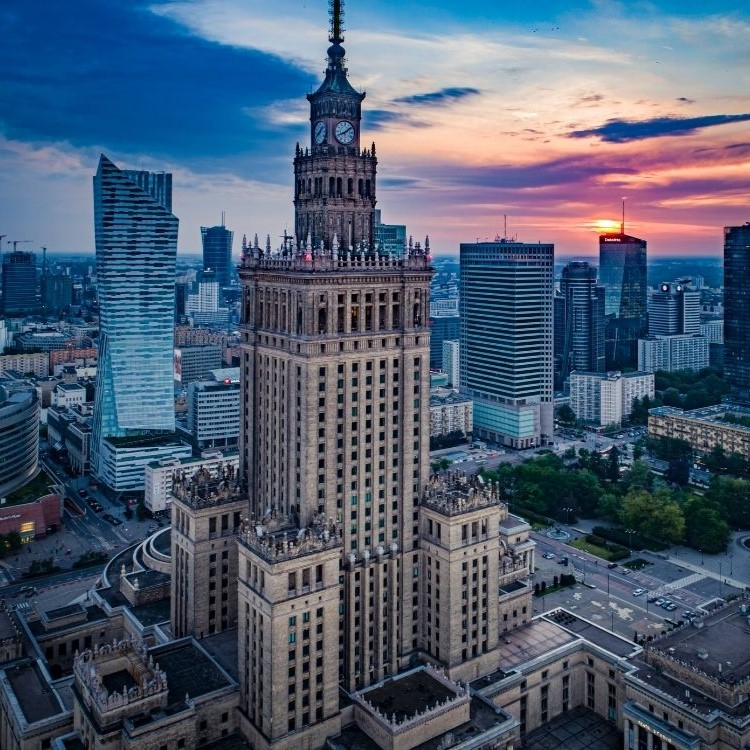
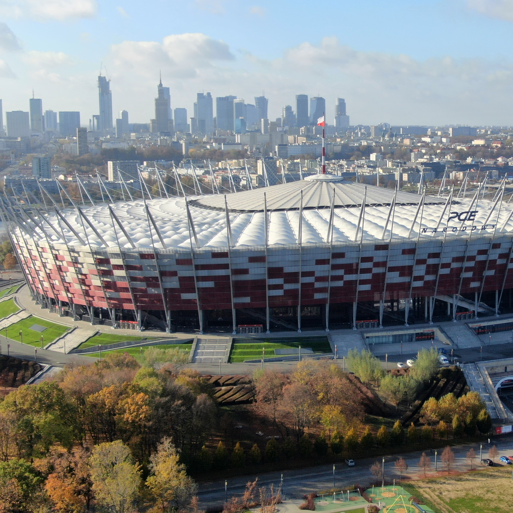
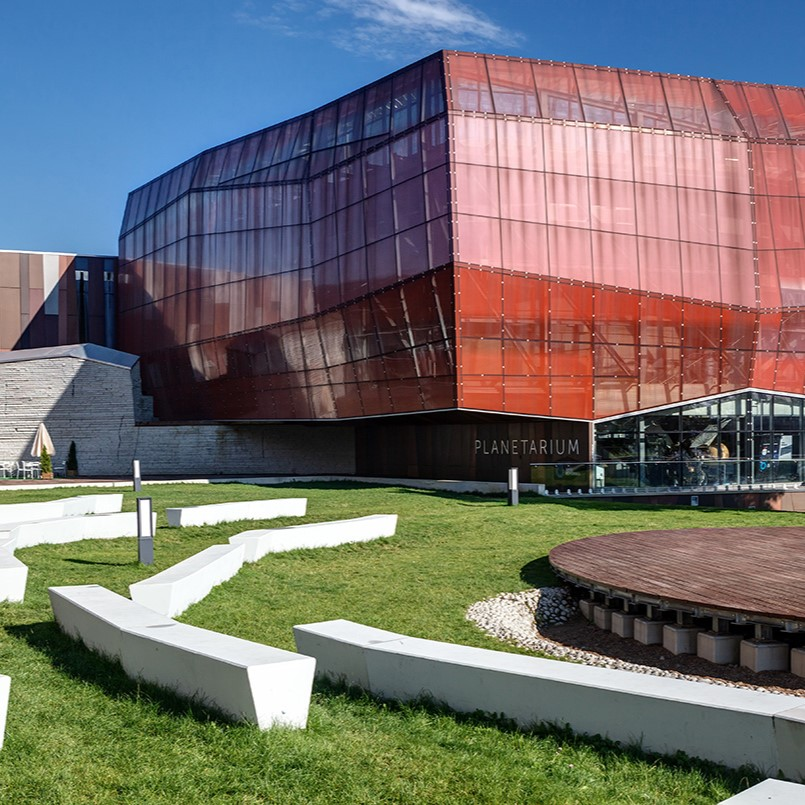

What to See
Old Town

Warsaw’s Old Town is the jewel in the Polish capital’s crown. It
delights visitors with its colourful tenement houses and the unique
atmosphere of its narrow streets. It is no wonder that it has been
entered on the UNESCO World Heritage list! Be sure to visit the
Royal Castle. It was there that the Constitution of 3 May was passed
– the first in Europe and the second in the world. In the former
home of Polish rulers, you will see the royal apartments, paintings
by Rembrandt and canvases by Bernardo Bellotto, also known as
Canaletto. On Castle Square stands the column of King Sigismund III
Vasa, who in the 16th century moved the capital of Poland from
Krakow to Warsaw. The oldest and the highest secular monument of the
capital is an excellent landmark where locals in Warsaw often
arrange to meet. The Old Town Square is the oldest and one of the
most charming squares in Warsaw. It’s impossible not to fall in love
with this place! It was laid out at the turn of the thirteenth and
fourteenth centuries. Festivities and markets were organised here,
but convicts were also executed. Although it is more than seven
centuries old, its form has hardly changed. In the middle of the
square stands a statue of the Warsaw Mermaid, the emblem and
guardian of the city. If you are interested in the history of the
city, visit the Museum of Warsaw or follow the Old Town Cellars
Route. See also the barbican and the bell on Kanonia street, take a
stroll along the old city walls and take a photo of the Vistula from
the observation point at Gnojna Góra. Step into the cathedral, which
houses the tombs of the medieval Mazovian princes, the last king of
Poland Stanisław August Poniatowski, and the outstanding pianist and
politician Ignacy Jan Paderewski. In the summer, the Old Town is
full of café gardens and becomes a stage for cultural festivals. In
winter, the Old Town and the Royal Route sparkle with beautiful
illuminations.
Lazienki Park
 This vast garden is a favourite place for Varsovians where they go
for long walks amid beautiful nature and architecture to rest from
the hustle and bustle of the city. At the heart of the park is the
summer residence of the last king of Poland – Stanisław August
Poniatowski. The name of the complex comes from the
seventeenth-century bathhouse of a Polish nobleman, rebuilt in the
18th century into a palace. Here, in the Palace on the Island, King
Stanisław August Poniatowski hosted his famous Thursday dinners, to
which he invited scholars and poets to discuss the issues of the
day. Today it is a museum where you can admire paintings from the
royal collections. In the grounds of Łazienki you will also see an
orangery, an amphitheatre, a court theatre, the Museum of Hunting
and Horse-riding, the Myślewicki Palace and numerous free-standing
sculptures. From spring to late autumn, the gardens are abundant
with flowers. Squirrels and peacocks as well as ducks and swans are
also among the park’s attractions. If you visit Warsaw in the
summer, be sure to take part in one of the famous Chopin Concerts,
which take place every Sunday at 12.00 and 16.00, from May 15 to
September 25. In winter, take a walk along the Chinese Avenue, where
you will see several-metre-long, luminous figures in period
costumes.
This vast garden is a favourite place for Varsovians where they go
for long walks amid beautiful nature and architecture to rest from
the hustle and bustle of the city. At the heart of the park is the
summer residence of the last king of Poland – Stanisław August
Poniatowski. The name of the complex comes from the
seventeenth-century bathhouse of a Polish nobleman, rebuilt in the
18th century into a palace. Here, in the Palace on the Island, King
Stanisław August Poniatowski hosted his famous Thursday dinners, to
which he invited scholars and poets to discuss the issues of the
day. Today it is a museum where you can admire paintings from the
royal collections. In the grounds of Łazienki you will also see an
orangery, an amphitheatre, a court theatre, the Museum of Hunting
and Horse-riding, the Myślewicki Palace and numerous free-standing
sculptures. From spring to late autumn, the gardens are abundant
with flowers. Squirrels and peacocks as well as ducks and swans are
also among the park’s attractions. If you visit Warsaw in the
summer, be sure to take part in one of the famous Chopin Concerts,
which take place every Sunday at 12.00 and 16.00, from May 15 to
September 25. In winter, take a walk along the Chinese Avenue, where
you will see several-metre-long, luminous figures in period
costumes.
Warsaw Uprising Museum

A unique place that helps visitors understand contemporary Warsaw.
This interactive museum commemorates the largest underground combat
operation in German-occupied Europe during World War II. The 1944
Warsaw Uprising changed forever the face of the Polish capital. The
multimedia exhibition reflects the atmosphere of the Uprising, shows
not only the military history of the 63 days of fighting and the
everyday life of the civilian population, but also describes the
post-war communist terror. Strolling along the granite pavement
among the rubble of the destroyed capital, you will listen to the
stories of the insurgents and see original exhibits from the
uprising. You will understand how soldiers moving through the sewers
felt and you will see a birds-eye view of the flattened city in the
film City of Ruins. You can also take a selfie with a faithful
replica of a Liberator B-24J. Drops with equipment for those
fighting in Warsaw were made from such planes. At the heart of the
museum is a steel monument that passes through all the floors of the
building. Its walls are covered with the dates of each day of the
uprising as well as bullet marks, and the sound of a beating heart
that symbolises the life of Warsaw in 1944 comes from inside. In
Freedom Park next to the museum, pay attention to the Memorial Wall.
Nearly 11,000 names of soldiers killed in the Uprising are engraved
on it. Be sure to also pay attention to insurgent murals by
well-known Polish artists on the “Wall of Art”.
See also


